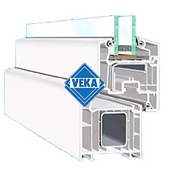
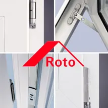
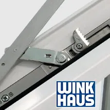
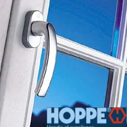
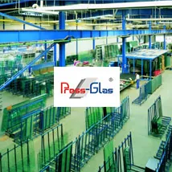
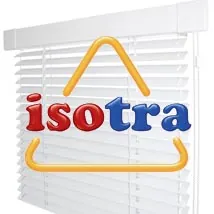

Fördelar med PVC-fönster
PVC är ett perfekt material för konstruktion. Här är varför – och vilka leverantörer vi arbetar med.
Fördelar
- Energibesparande
- Underhållsfria
- Lång livslängd
- Väderbeständiga
- Färgbeständiga
- Miljövänliga
- Ljudisolerande
- Måttbeställning
- Elegant design
Utbud av glas
- 2-glaskassett U 1,1
- 3-glaskassett U 0,8
- Med argon
- Med varma kanter
- Med solskydd
- Ljudisolerande
- Smutsavvisande
- Matt/mönstrat glas
- Brandsäkert
- Säkerhetsglas
Beslag
- Inåtgående dreh-kippSidohängda med vädring
- Utåtgående med gömda gångjärnDörrar och fönster
- Handtagsstyrda bromsar för dörrarUtåtgående dörrar
Tysk och europeisk kvalitet






VEKA – profilerRoto – beslagWinkhaus – beslagHoppe – handtagPress Glas – glasIsotra – persienner
Berätta vad du planerar – vi tar fram en offert.
Allt tillverkas på beställning i vår fabrik i Lödöse. Välkommen att besöka utställningen i Lilla Edet, eller skicka en förfrågan direkt.
- 0707-14 40 01
- info@fvab.se
- Göteborgsvägen 90, Lilla Edet